GitHub es una plataforma de desarrollo colaborativo donde los programadores y desarrolladores pueden almacenar, gestionar y compartir sus proyectos de código.
Para crear un repositorio en GitHUb primeramente debemos tener una cuenta en GitHUb, para esto simplemente entramos a la página de GitHub, luego de registrarnos y tener nuestra cuenta veremos lo siguiente:
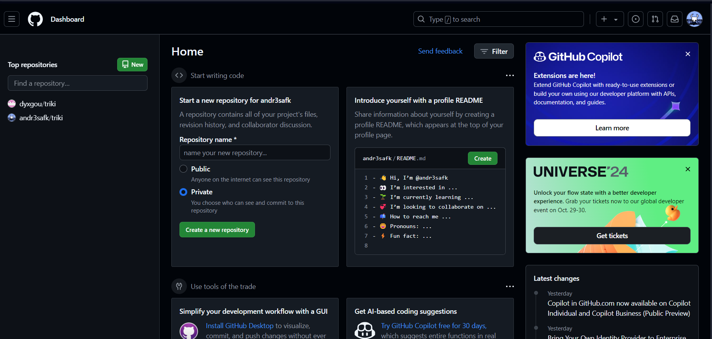Para tener nuestro primer Repositorio podemos crearlo de 2 maneras en esta página, que son las señaladas a continuación.
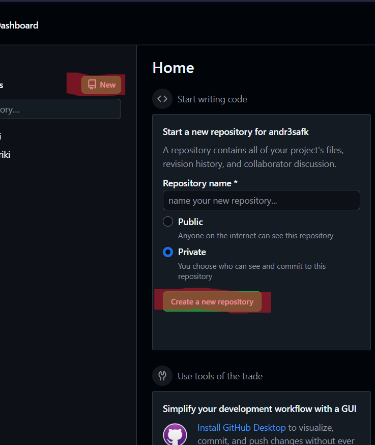Se mostrará una pestaña en la que podrás añadir un nombre, decidir si el repositorio sea público (Permite a todo el mundo verlo) O Público(Se controla quienes pueden acceder al repositorio).
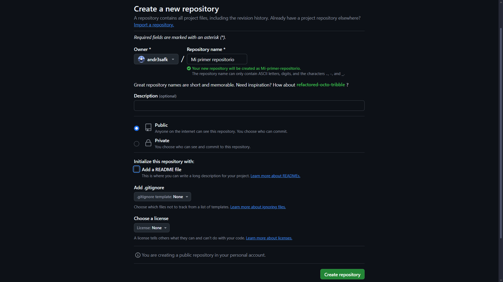Para el nombre se recomienda ser muy descriptivo, y que defina al proyecto de manera rápida, se puede añadir una descripción opcional y un Read Me que es un archivo en el que se puede escribir, normalmente es usado por el autor para algunas notas del proyecto, adjuntar créditos entre otros usos. Finalmente creamos el repositorio.
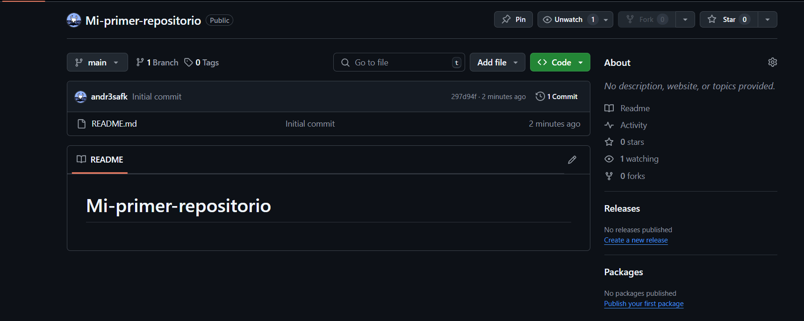Y tenemos nuestro repositorio creado con el que podremos empezar a trabajar.
Para enlazar un repositorio a nuestro editor de código, debemos abrir este mismo, luedo, debemos ir de nuevo a nuestro Repositorio y allí seguir las instrucciones que debemos realizar en nuestro editor de código, para esto abrimos una terminal.
Seguidamente usamos el comando git init para inicializar nuestro repositorio de manera local.
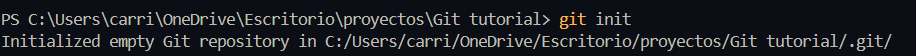Podemos comprobar si nos faltan "Archivos por subir" con el comando git status.
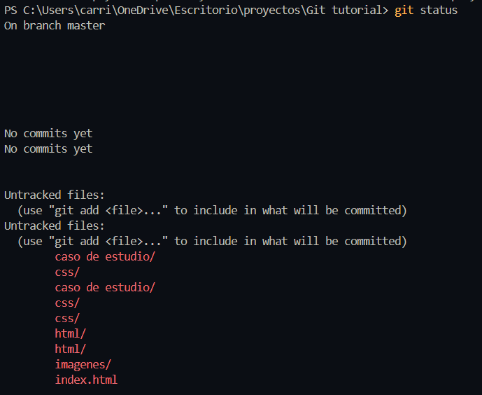Como podemos ver, aún no se han realizado un Commit en el que se suban los archivos que estamos trabajando, para subirlos podemos usar el comando git add.
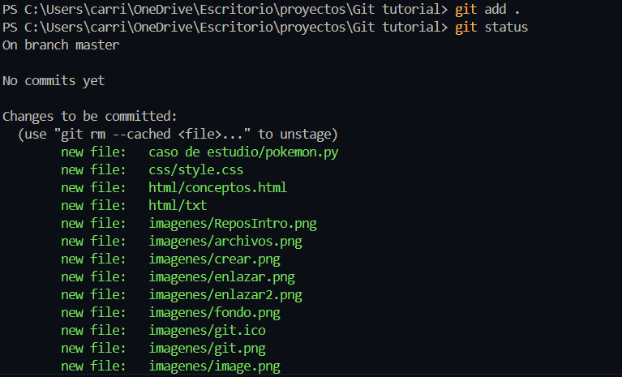usando el mismo git status. podemos corroborar que los archivos están subidos de manera correcta.
Ahora. usamos el comando git commit -m para realizar nuestro primer commit, debemos tener en cuenta que esto se está realizando de manera local y no se ve reflefado de momento en nuestro github.
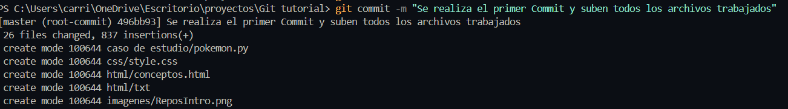Con estos pasos ahora sí es posible enlazar a nuestro repositorio de GitHub de manera que se pueda consultar mediante la web. Para esto usamos el comando git remote add origin y seguidamente la URL de nuestro repositorio.
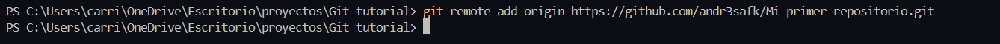Finalmente "Enviamos" nuestros archivos con el último comando git push -u origin main
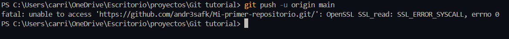Un commit es básicamente como un Guaradr cambios, en el proyecto, este se almacena en los cambios realizados en el proyecto, en el repositorio.
Un commit incluye un Mensaje en el cual se agrega información que explica que se ha modificado y/o añadido al proyecto y sus funcionalidades
Lo podemos realizar en nuestro propio editor de código si nos dirigimos a la parte izquierda y seleccionamos la opción de Git.
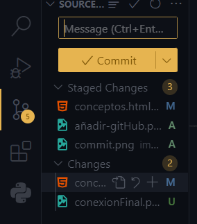En este apartado seleccionamos los archivos que vamos a subir y agregamos un comentario para el historial del repositorio.